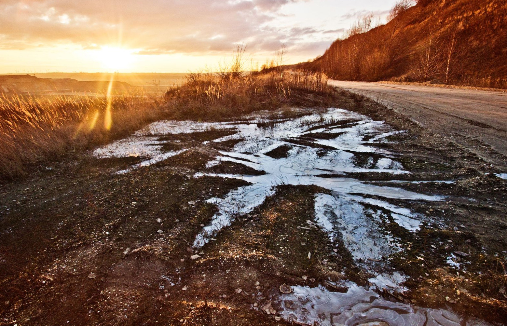

Slush, also called slush ice, is a slurry mixture of small ice crystals (e.g., snow) and liquid water.[1] In the natural environment, slush forms when ice or snow melts. This often mixes with dirt and other materials, resulting in a gray or muddy brown color. Often, solid ice or snow will block the drainage of fluid water from slushy areas, so slush often goes through multiple freeze/thaw cycles before completely disappearing. In areas where road salt is used to clear roadways, slush forms at lower temperatures than it would ordinarily, and only in salted areas; this can produce a number of different consistencies over the same geographical area. Slushfall or slushing is the action of a wet snow falling from the sky.
